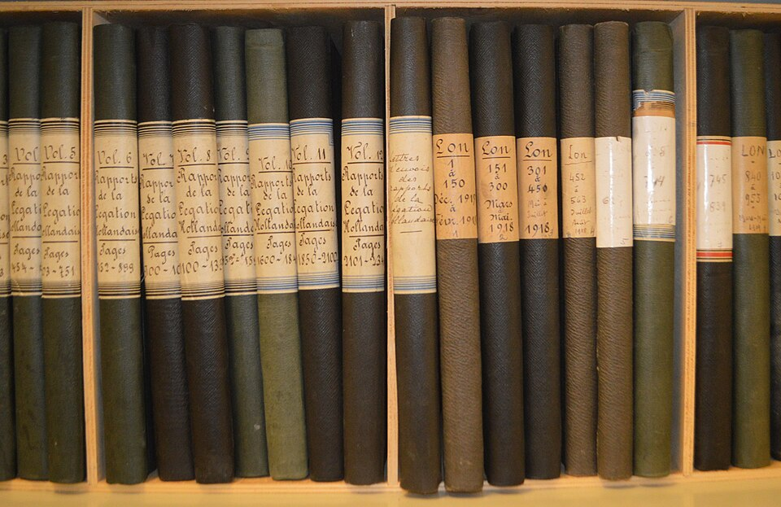

Segreteria della Collaborazione Pastorale
Un punto di riferimento per l'organizzazione, l'archiviazione e il coordinamento della vita comunitaria.
Servizi Offerti
- Gestione degli archivi cartacei e digitali dei Sacramenti (Battesimi, Matrimoni, Defunti)
- Organizzazione e prenotazione degli spazi della Collaborazione Pastorale
- Coordinamento delle Messe e delle celebrazioni liturgiche
- Supporto amministrativo alle attività pastorali
- Assistenza alla comunicazione tra parrocchie
È disponibile un'applicazione per la ricerca delle registrazioni di Battesimo, Matrimonio e Defunti (attualmente digitalizzate al 90%).
